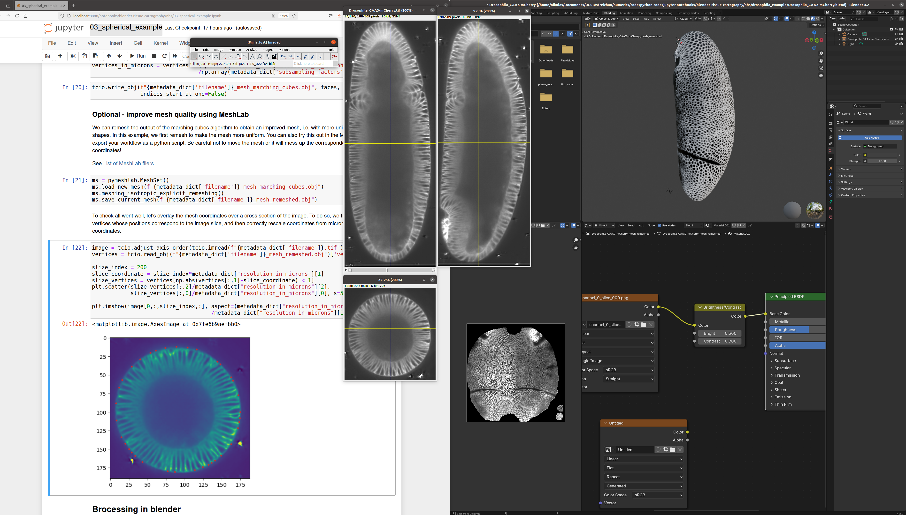
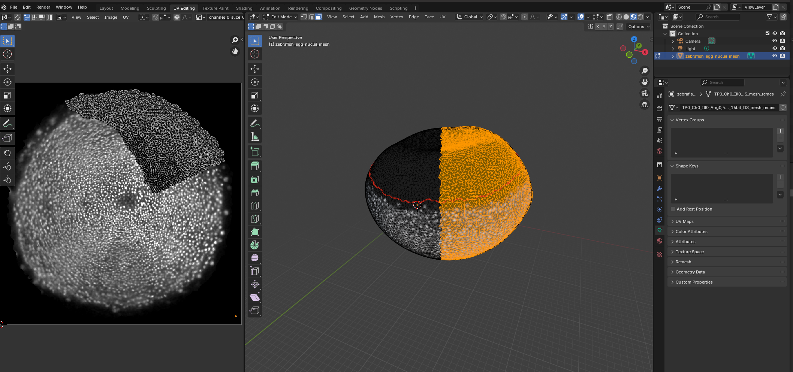

blender-tissue-cartography
What this tool does
Tissue cartography extracts and cartographically projects surfaces from volumetric image data. This turns your 3d data into 2d data which is much easier to visualize, analyze, and computationally process. Tissue cartography is particularly useful in developmental biology, analyzing 3d microscopy data by taking advantage of the laminar, sheet-like organization of many biological tissues. For more detail, see Heemskerk & Streichan 2015 and Mitchell & Cislo 2023.
blender_tissue_cartography is a set of Python tools, template analysis pipelines, and tutorials to do tissue cartography using the popular 3d creation software blender. The goal is to make tissue cartography as user-friendly as possible using simple, modular Python code and blender’s graphical user interface.
Work in progress!
This project is a work in progress and will change rapidly. If you want to use it, I recommend updating regularly.
- Tools for individual recordings are in a reasonably complete state
- Tools for dynamic recordings/movies are complete, but not fully tested
- Tutorials to be written: analysis in 3d
Installation
Install required non-python programs: Fiji (optional), Ilastik, Meshlab (optional), and Blender.
Install Python via anaconda/miniconda, if you haven’t already.
- If
condais unbearably slow for you, install mamba, acondareplacement which is much faster.
- If
Install
blender_tissue_cartography:- run
pip install blender-tissue-cartographyin a command window.
- run
(Optional) Install extra Python library for
pymeshlab, required for some advanced (re)meshing functionality. This package is not available on new ARM Apple computers.- run
pip install pymeshlabin a command window
- run
(Optional) Install the Blender plugin MicroscopyNodes for rendering volumetric
.tiffiles in blender
The project is hosted on pip, with source code on GitHub.
Developer installation
Clone the github repository.
Create a
condaenvironment with all Python dependencies and install theblender_tissue_cartographymodule. Open a command window in theblender-tissue-cartographydirectory and type:conda env create -n blender_tissue_cartography -f environment.ymlconda activate blender_tissue_cartographypip install -e .
(Optional) Install extra Python library for
pymeshlab, required for some advanced functionality (remeshing and surface reconstruction from within Python).pip install pymeshlab- Note that this package is not available on new ARM Apple computers.
Install nbdev
Documentation
Full documentation (including jupyter tutorials) is available here: https://nikolas-claussen.github.io/blender-tissue-cartography/
Usage
For a tissue cartography project, first, create a folder to hold your data and results. You run the blender_tissue_cartography pipeline from a jupyter computational notebook, which can also serve as your lab notebook (notes, comments on the data). Use one of the tutorial jupyter notebooks as a template with instructions. As you work through the notebook, you will:
create a segmentation of your 3d data
convert the segmentation into a mesh of your surface of interest
load the mesh into blender to map to unwrap it into the plane
make a cartographic projection of your 3d data using the unwrapped mesh
visualize the results in 3d using blender.
Below is a screenshot to give you an idea of the workflow for the example Drosophila dataset: Volumetric data in ImageJ (center), jupyter computational notebook to run the blender_tissue_cartography module (left), and blender project with extracted mesh and texture (right).
Some fully worked-out examples are provided in the nbs/Tutorials/ folder on GitHub. You can download the code as a .zip file and unpack it (green button “Code”). You can look at the jupyter notebooks on the documentation webpage without downloading anything. To run a tutorial on your computer, follow the installation instructions and then launch jupyter and work through the notebooks in the Tutorials directory in order. If you are impatient, jump directly to nbs/Tutorials/03_basics_example.ipynb. I recommended being comfortable with running simple Python code (you don’t have to do any coding yourself). The basic user interface of blender is explained in nbs/Tutorials/02_blender_tutorial.ipynb.

In this pipeline, you can edit meshes and cartographic projections interactively - you can create a preliminary projection of your data automatically, and use it as guidance when editing your cartographic map in blender. Here, we edit the “seam” of our cartographic map based on the region occupied by cells during zebrafish epiboly (tutorial 6).

Notes for Python beginners
You will need a working Python installation (see here: installing anaconda/miniconda, and know how to launch jupyter notebooks. You will run the computational notebooks in your browser. Here is a video tutorial
Create a new folder for each tissue cartography project. Do not place them into the folder into which you unpacked
blender_tissue_cartography- otherwise, your files will be overwritten if you want to update the softwareThe repository contains two sets of notebooks: in the
nbsfolder and in thenbs/Tutorialsfolder. Thenbs-notebooks are for developing the code. If you don’t want to develop/adapt the code to your needs, you don’t need to look at them. Copy a notebook from thenbs/Tutorialsfolder - e.g.03_basics_example.ipynb- into your project folder to use it as a template.You do not need to copy functions into your notebooks manually. If you follow the installation instructions, the code will be installed as a Python package and can be “imported” by Python. See tutorials!
Software stack
Note: the Python libraries will be installed automatically if you follow the installation instructions above.
Required
Optional
Other useful software
- MicroscopyNodes plug-in for rendering volumetric
.tiffiles in blender - Boundary First Flattening advanced tool for creating UV maps with graphical and command line interface
- pyFM python library for mesh-to-mesh registration (for dynamic data) which may complement the algorithms that ship with
blender_tissue-cartography
Acknowledgements
This software is being developed by Nikolas Claussen in the Streichan lab at UCSB. Noah Mitchell, Susan Wopat, and Matthew Lefebvre contributed example data. Sean Komura and Gary Han tested the software. Dillon Cislo provided advice on surface-surface registration.